Crypto
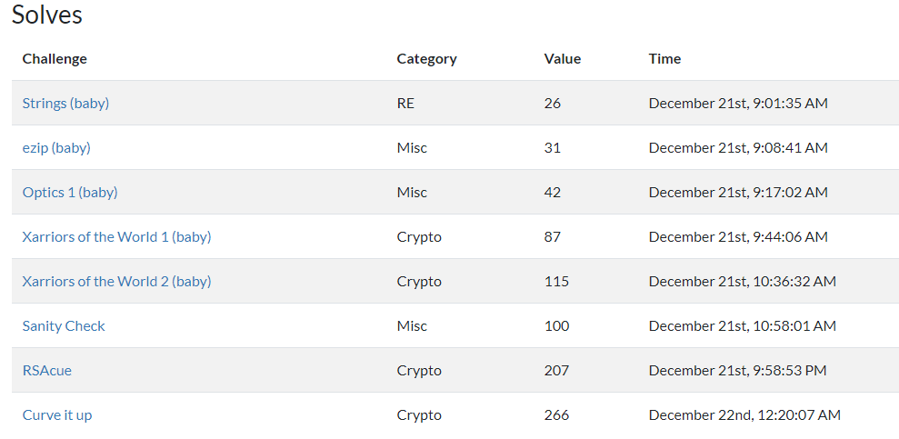
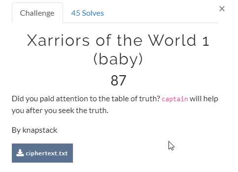
ciphertext.txt:
1 FhUTDwAQXTwCMAQVKV8NPgdHDQpeDgQvAFE2FlMTAh0OGx0e
题意明显是异或加密，且加密的key就是captain，密文是一段base64字符串
https://www.rapidtables.com/convert/number/ascii-hex-bin-dec-converter.html
转换为binary格式
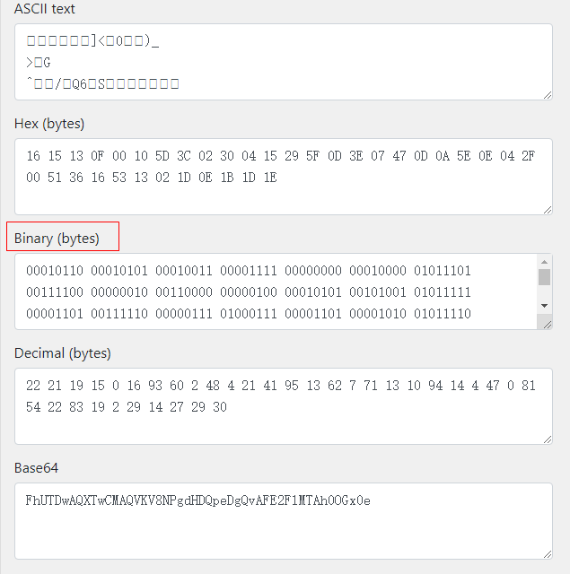
同时将captain也转换为binary格式
1 01100011 01100001 01110000 01110100 01100001 01101001 01101110
脚本如下，注意补齐key的长度
1 2 3 4 5 6 7 8 9 10 11 12 13 14 15 16 17 18 19 20 secret = "00010110 00010101 00010011 00001111 00000000 00010000 01011101 00111100 00000010 00110000 00000100 00010101 00101001 01011111 00001101 00111110 00000111 01000111 00001101 00001010 01011110 00001110 00000100 00101111 00000000 01010001 00110110 00010110 01010011 00010011 00000010 00011101 00001110 00011011 00011101 00011110" step1 = secret.split(" " ) print step1xorkey = "01100011 01100001 01110000 01110100 01100001 01101001 01101110 01100011 01100001 01110000 01110100 01100001 01101001 01101110 01100011 01100001 01110000 01110100 01100001 01101001 01101110 01100011 01100001 01110000 01110100 01100001 01101001 01101110 01100011 01100001 01110000 01110100 01100001 01101001 01101110 01100011" xorkey2 = xorkey.split(" " ) print len(step1)print len(xorkey2)flag = "" for x in range(36 ): flag += chr(int(step1[x],2 )^int(xorkey2[x],2 )) print flag
flag: utc{ay3_c@pt@1n_w3lc0me_t0_x0rriors}
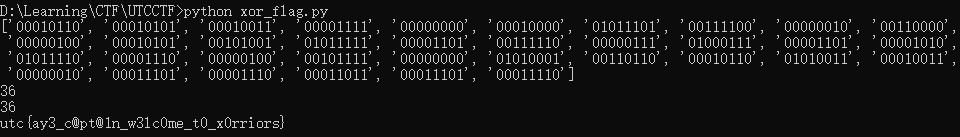
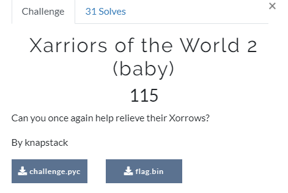
将pyc反编译：
1 2 3 4 5 6 7 8 9 10 11 import sysimport structzzz = int(sys.argv[1 ]) xxx = sys.argv[2 ] yyy = struct.pack('!' + 'i' * len(xxx), *map((lambda x: ord(x) ^ zzz), list(xxx))) outfile = open('flag.bin' , 'wb' ) outfile.write(yyy) outfile.close()
python的struct.pack用于将数据封装成字符串，!表示字节对齐方式(big-endian)，i表示integer，4个字节
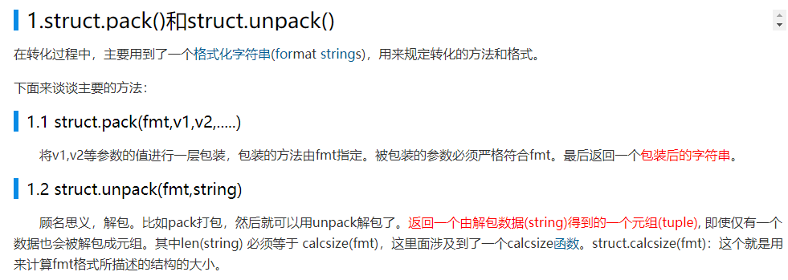
查看flag.bin的长度，116字节，然后使用struct.unpack返回一个元组(tuple)
1 2 3 4 5 6 7 8 9 10 11 import sysimport structinfile = open('flag.bin' ,'r' ) cipher = infile.read() print len(cipher)plain = struct.unpack('!' + 'i' * 29 ,cipher) print plain
返回：
1 2 3 D:\Learning\CTF\UTCCTF>python crypto2_xor.py 116 (57, 56, 47, 55, 39, 34, 12, 60, 63, 56, 12, 47, 7, 19, 32, 124, 58, 127, 63, 19, 46, 12, 46, 53, 19, 52, 124, 62, 49)
将上面的decimal转换为binary
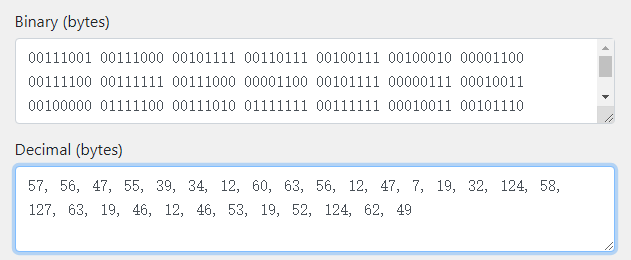
现在密文有了，和密钥key异或就可以得到明文，但是key我们还不知道
依据这题的代码，可以利用flag里的已知的utc{片段尝试破解key
最终通过这个片段和密文异或发现返回的key为
所以自然联想到key就是和密文同样长度的L组成
脚本：
1 2 3 4 5 6 7 8 9 10 11 12 13 14 15 16 17 18 19 20 21 secret = "00111001 00111000 00101111 00110111 00100111 00100010 00001100 00111100 00111111 00111000 00001100 00101111 00000111 00010011 00100000 01111100 00111010 01111111 00111111 00010011 00101110 00001100 00101110 00110101 00010011 00110100 01111100 00111110 00110001" step1 = secret.split(" " ) print step1xorkey = "01001100 01001100 01001100 01001100 01001100 01001100 01001100 01001100 01001100 01001100 01001100 01001100 01001100 01001100 01001100 01001100 01001100 01001100 01001100 01001100 01001100 01001100 01001100 01001100 01001100 01001100 01001100 01001100 01001100" xorkey2 = xorkey.split(" " ) print len(step1)print len(xorkey2)flag = "" for x in range(29 ): flag += chr(int(step1[x],2 )^int(xorkey2[x],2 )) print flag
flag: utc{kn@pst@cK_l0v3s_b@by_x0r}
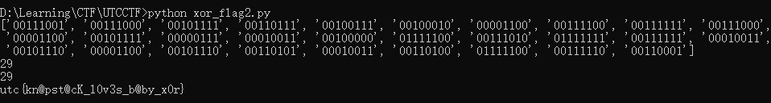
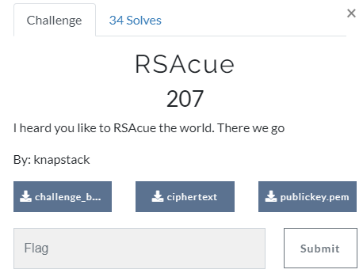
challenge_baby.py
1 2 3 4 5 6 7 8 9 10 11 12 13 14 15 16 17 18 19 20 21 22 23 24 25 26 from Crypto.Util.number import *from Crypto.PublicKey import RSAfrom Crypto.Cipher import PKCS1_v1_5import gmpy2from flag import mp = getPrime(1024 ) while True : p1 = gmpy2.next_prime(p) if p1-p == 2 : q = p1 break else : p = p1 n = p*q e = 65537 pub = RSA.construct((long(n), long(e))) f = open('publickey.pem' , 'w' ) f.write(pub.exportKey()) f.close() key = PKCS1_v1_5.new(pub) ct = key.encrypt(m).encode('base64' ) f1 = open('ciphertext' , 'w' ) f1.write(ct) f1.close()
从代码里可以看到p和q是两个质数，可以使用primefac去分解
publickey.pem
1 2 3 4 5 6 7 8 9 -----BEGIN PUBLIC KEY----- MIIBIjANBgkqhkiG9w0BAQEFAAOCAQ8AMIIBCgKCAQEAuOVmbCjQmabZDnj0wskE uVUvrSB+BW5s2pme7wPB2sggLFZdvH64V/8AHiOW+uv/9VFfq6cssHmzVjCbiCte cV3vD5TC9DM/auAVJQdOgceGlpW2Aww18Vn2Dw1Nv/Wfr1XFS9wwH7Yrp0cax5uF Di71WM1W4ZQXscjeBDYoZ8kqqVUeQ3nce0qZpNKGtjSGPJKD0GHjPa8D9WLfIN/k U1OWCyyvm2MBUxOIHIyE21n2fbjJDhnbuQTSKxyaHHLttQPUh1fwSQNVSDNdpFX5 VILbiI+YZPYyO87oJ8nk3vPz1jTl6f+SZNCKaeHlNM4qu3EWlyV60RPLzjejjTZv AwIDAQAB -----END PUBLIC KEY-----
统一用RsaCtfTool来处理
提取公钥(N,e)
1 2 3 root@automne:/Pentest/Tool/RsaCtfTool# python RsaCtfTool.py --key ../../CTF/UTCCTF/publickey.pem --dumpkey [*] n: 23340969513181681669886867124297366201945838538200009802685175918916975846804407564465991446659110587194498035612776912466980598231734891359851233259880511275720151718945837594008921478180856400092449301945615071348468948166726825972379205191078930318376444669315567445937802438802902489277773238394532264660179274909819475224351258216422153542290105609840561176158021408561703840207392844063034658892035606967061985331583041696160739791355387960973933646534405406373409762058896880070632898708609976063409024168659391417736541832207520205503452433935527234086203176945565493782067913785720671180939691807486166593283 [*] e: 65537
密文ciphertext:
1 2 3 4 5 Ot9VnRqIa4VThI1KQC8nmk/HRQTv8DHekjl1g5M4WY8gcFspJcw9WeWrqGvfIDZpwqNhD9RXoZct Pp4bsVDEukvc6cEMHQeP1M59gkezCazU2SY2O3xIYrZXhlA93lz3mdayXPVO2yjUSX2zF5kyRChc 5yUU7/pnLY0I0+bpBJtjXAULRNymL9Z3qzgeo4AO8/lG+QG9Mm7FgKbBL0QGVHEaotTGwkYXAm1F UsJuNVj4hVd3I1VQnwFJ6MXP5BKdSoWZVhkdp1QjesG4EigOsDIDc28uheSwrONo3C3Jnxlqchta PhZxMC/b2e6B7il7mHPxRwn75AP+NYvs/ZGPiA==
又要转换格式，头疼
首先将上面的base64字符串转化为Hex字符串
1 2 3 4 5 6 f1 = open('ciphertext' , 'r' ) cipher = f1.read() print cipher.decode('base64' )cipher2 = cipher.decode('base64' ) cipher3 = cipher2.encode('hex' ) print cipher3
再讲Hex字符串转为Decimal
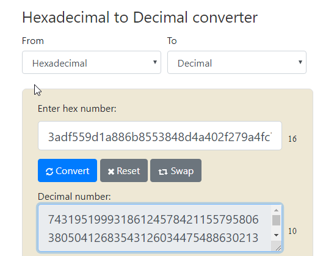
最后使用RsaCtfTool直接解密，传入n,e和密文
1 root@automne:/Pentest/Tool/RsaCtfTool# python RsaCtfTool.py -n 23340969513181681669886867124297366201945838538200009802685175918916975846804407564465991446659110587194498035612776912466980598231734891359851233259880511275720151718945837594008921478180856400092449301945615071348468948166726825972379205191078930318376444669315567445937802438802902489277773238394532264660179274909819475224351258216422153542290105609840561176158021408561703840207392844063034658892035606967061985331583041696160739791355387960973933646534405406373409762058896880070632898708609976063409024168659391417736541832207520205503452433935527234086203176945565493782067913785720671180939691807486166593283 -e 65537 --uncipher 7431951999318612457842115579580638050412683543126034475488630213628702754700226505879103974859876990754837687841187029957327030172170839267101690591618400512846240939580423955366272775594141466143744221186832743831184716692583548438085620288422323963660204279471660842758035765281353244128356800536721490191690543831775228885948722670812123906195703623660426815071786848886175187645906181358760881659925324634097542616951522588823660889985928950266064064687040877294171936782648376324829020780271046423367313650077099793518340524546586532075741401990871482612706470460240388127578285097414867337664489592380401487752 --verbose
flag: utc{d0n7_k33p_pr1m35_cl053_by_2}
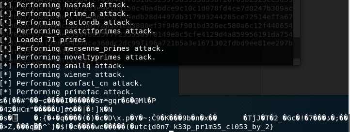
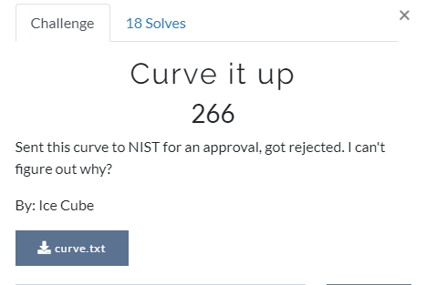
椭圆曲线密码学
之前做过功课：https://ce-automne.github.io/2019/04/25/TGHACK-CTF-2019-UnSolved-WriteUp/
curve.txt:
1 2 3 4 5 6 7 8 9 10 11 Elliptic Curve: y^2 = x^3 + A*x + B mod N N = 58738485967040967283590643918006240808790184776077323544750172596357004242953 A = 76727570604275129576071347306603709762219034167050511215297136720584179974657 B = ??? P = (1499223386326383661524589770996693829399568387777849887556841520506306635197, 18509752623395560148909577815970815579696746171847377654079329916213349431951) Q = (29269524564002256949792104801311755011410313401000538744897527268133583311507, 29103379885505292913479681472487667587485926778997205945316050421132313574991) Q = n*P The flag is utfc{n}
Q = n*P，P为ECC的的一组解(x1 ,y
这里参数B未知，需要先求出来才能套用公式求解
1 y^2 mod N = (x^3 + A*x + B) mod N
1 2 3 4 5 6 7 8 9 C:\Users\l3085>python Python 2.7.12 (v2.7.12:d33e0cf91556, Jun 27 2016, 15:19:22) [MSC v.1500 32 bit (Intel)] on win32 Type "help", "copyright", "credits" or "license" for more information. > >> c = 18509752623395560148909577815970815579696746171847377654079329916213349431951**2 > >> c 342610942179298821136823124969382197311315422949911754851681223790922888720253676302146798160327852354115454913443831065106159086984159072345814379666401L > >> c2 = 1499223386326383661524589770996693829399568387777849887556841520506306635197**3 + 1499223386326383661524589770996693829399568387777849887556841520506306635197*76727570604275129576071347306603709762219034167050511215297136720584179974657 > >> c2 3369760571314282859166389038406176075686432623212640339854301195366315930613392734269441157744428800250886285807370001519017490202030440149609667757395383550188441402181323170798338801608448516275103046163252853592417979992802L
ok，那么现在就有下面的等式：
1 2 3 4 c = y^2 c2 = x^3 + A*x 于是有： c2 + B == N*k + c , k为系数
使用z3进行约束求解：
1 2 3 4 5 6 7 8 9 10 from z3 import *x = Int('x' ) y = Int('y' ) N = 58738485967040967283590643918006240808790184776077323544750172596357004242953 c = 342610942179298821136823124969382197311315422949911754851681223790922888720253676302146798160327852354115454913443831065106159086984159072345814379666401 c2 = 3369760571314282859166389038406176075686432623212640339854301195366315930613392734269441157744428800250886285807370001519017490202030440149609667757395383550188441402181323170798338801608448516275103046163252853592417979992802 solve(c2 + x == N*y + c,x>0 ,y>0 )
于是求出一对解，x就是对应B的值：
1 6922870007550502185107402034529582240539099403142158978076525908900094966208
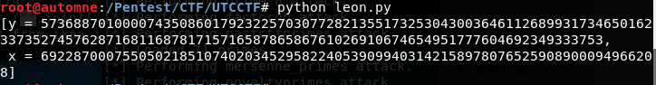
最后使用sage代码求解私钥：
1 2 3 4 5 6 7 8 9 10 11 A = 76727570604275129576071347306603709762219034167050511215297136720584179974657 B = 6922870007550502185107402034529582240539099403142158978076525908900094966208 N = 58738485967040967283590643918006240808790184776077323544750172596357004242953 E = EllipticCurve(Zmod(N), [A, B]) P = E(1499223386326383661524589770996693829399568387777849887556841520506306635197, 18509752623395560148909577815970815579696746171847377654079329916213349431951) Q = E(29269524564002256949792104801311755011410313401000538744897527268133583311507, 29103379885505292913479681472487667587485926778997205945316050421132313574991) x = P.discrete_log(Q) print x
求解还是花了几分钟的，最终得到私钥：314159
flag: utc{314159}
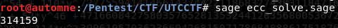